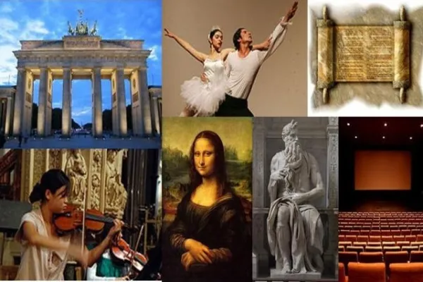
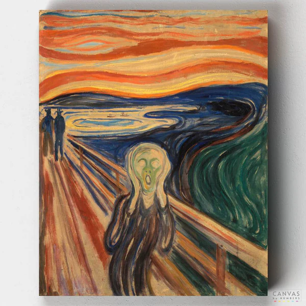
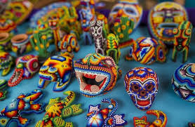
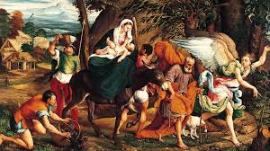
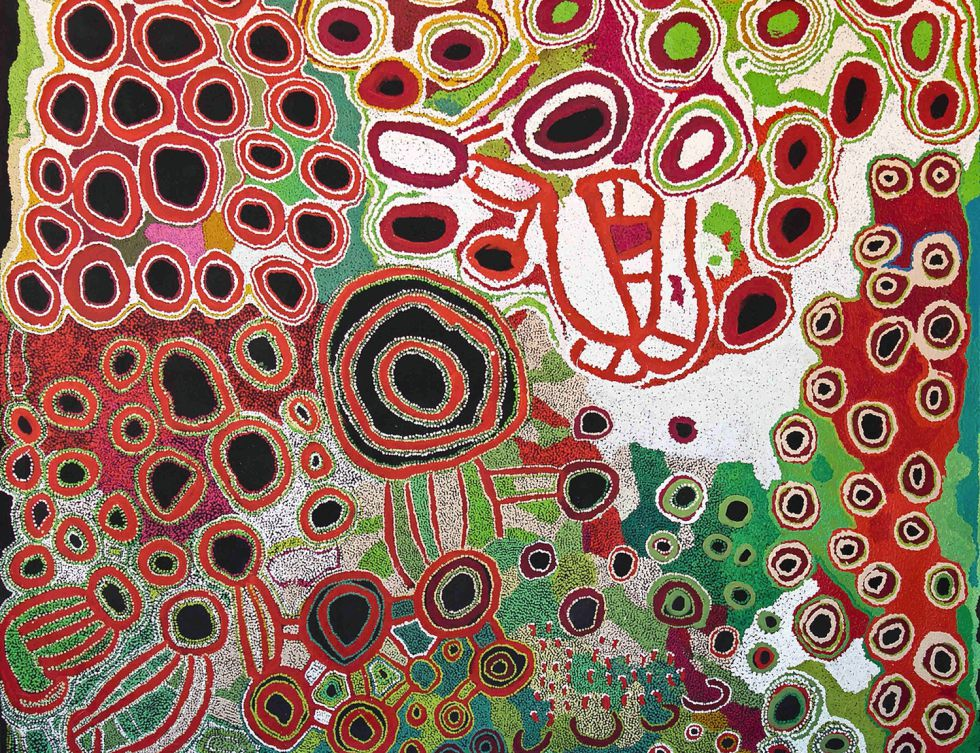

La cultura y la contracultura son dos fuerzas dinámicas que moldean nuestra sociedad. Mientras que la cultura refleja las normas, valores y prácticas compartidas por un grupo, la contracultura desafía esas normas establecidas y promueve ideales alternativos. Desde los movimientos contraculturales históricos como el hippismo y el punk hasta las expresiones contemporáneas como el activismo social en línea o el resurgimiento de la cultura nerd, estas formas de resistencia cultural han influido en la música, el arte, la moda y la política. Sin embargo, su recepción ha sido variada, enfrentando tanto el elogio como la crítica de la cultura dominante. En la era digital, la tecnología ha amplificado su alcance y capacidad de organización, pero también ha planteado nuevos dilemas éticos. A pesar de los desafíos, la cultura y la contracultura continúan interactuando de maneras complejas, desafiando las narrativas establecidas y enriqueciendo la diversidad cultural en nuestro mundo globalizado.

Bellas artes
Las bellas artes, desde la pintura y la escultura hasta la música y la danza, representan la expresión más sublime de la creatividad humana. A lo largo de la historia, han sido vehículos para transmitir emociones, ideas y experiencias que trascienden las barreras lingüísticas y culturales. A través de la experimentación estética y la innovación técnica, los artistas han desafiado las convenciones, explorando nuevos territorios creativos y provocando reflexiones sobre la condición humana. Las bellas artes no solo reflejan la diversidad y la complejidad de nuestra experiencia, sino que también nos conectan con nuestra esencia más profunda, recordándonos nuestra capacidad para imaginar, crear y transformar el mundo que habitamos.

vanguardia
El arte de vanguardia, surgido a finales del siglo XIX y desarrollado en el siglo XX, desafía las convenciones establecidas y busca romper con las tradiciones artísticas previas. A través de movimientos como el cubismo, el surrealismo, el dadaísmo y el expresionismo abstracto, los artistas de vanguardia exploran nuevas formas de representación visual, cuestionan la naturaleza misma del arte y su relación con la sociedad. Al rechazar la idea de la belleza convencional y la narrativa figurativa, estos movimientos buscan expresar lo subjetivo, lo inconsciente y lo abstracto, desafiando al espectador a cuestionar sus propias percepciones y preconcepciones. El arte de vanguardia se caracteriza por su experimentación constante, su radicalidad y su capacidad para desafiar los límites del arte y la imaginación.

Artesanía
La artesanía es la manifestación de la creatividad y habilidad humana a través de la producción de objetos únicos o en serie, generalmente hechos a mano con técnicas tradicionales. Desde tiempos inmemoriales, la artesanía ha sido una parte integral de la cultura y la identidad de las comunidades en todo el mundo, transmitiendo conocimientos y tradiciones de generación en generación. A diferencia del arte de vanguardia o las bellas artes, la artesanía a menudo se centra en la funcionalidad y la utilidad, creando objetos que satisfacen necesidades prácticas además de estéticas. Sin embargo, esto no resta valor a su belleza y creatividad, ya que la artesanía refleja la riqueza cultural y la destreza técnica de sus creadores, preservando técnicas ancestrales y materiales locales en un mundo cada vez más industrializado y globalizado.

Arte premoderno
El arte premoderno abarca un vasto período de la historia humana que precede a la era moderna, desde las primeras expresiones artísticas de las civilizaciones antiguas hasta el Renacimiento europeo. Este arte se caracteriza por su diversidad de estilos, materiales y técnicas, reflejando las creencias, valores y circunstancias culturales de las sociedades en las que se desarrolló. Desde las pinturas rupestres en cuevas hasta las esculturas colosales de las antiguas civilizaciones egipcia, griega y romana, el arte premoderno se centra en temas religiosos, mitológicos, históricos y cotidianos, transmitiendo conocimientos, emociones y aspiraciones a través de imágenes poderosas y simbólicas. Aunque las formas y los contextos artísticos varían enormemente a lo largo del tiempo y el espacio, el arte premoderno sigue siendo una fuente invaluable de comprensión y aprecio por las raíces de la creatividad humana y su capacidad para trascender las limitaciones del tiempo y el espacio.

Arte no occidental
El arte no occidental abarca una amplia gama de tradiciones artísticas y culturales que se desarrollaron fuera del contexto de Europa y América del Norte. Desde las intrincadas esculturas de madera de África hasta las coloridas pinturas aborígenes de Australia, este arte refleja la diversidad y la riqueza de las culturas del mundo. A menudo arraigado en tradiciones ancestrales y cosmovisiones únicas, el arte no occidental aborda una variedad de temas, desde lo espiritual y lo mitológico hasta lo político y lo social. Las técnicas y los materiales varían ampliamente según la región y la época, pero comparten una profunda conexión con la identidad cultural y la expresión individual. Aunque a menudo ha sido marginado o subestimado en comparación con el arte occidental en los círculos académicos y artísticos, el arte no occidental desafía las narrativas eurocéntricas y enriquece nuestra comprensión del mundo y la creatividad humana en todas sus formas.